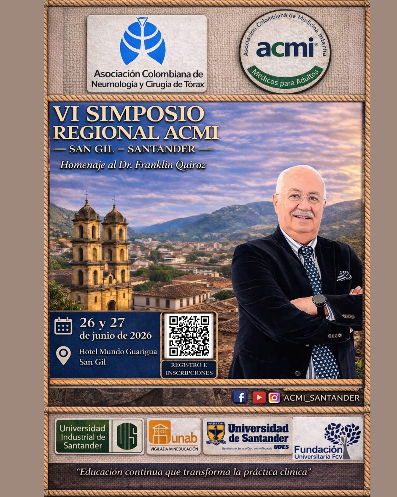
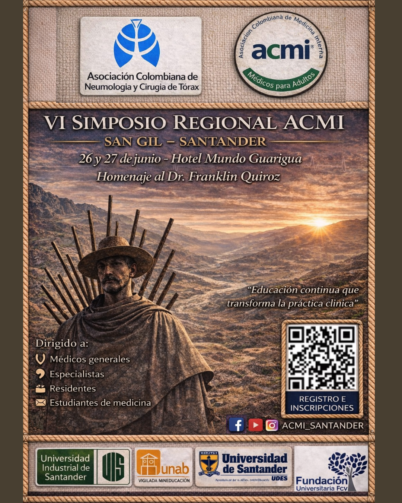
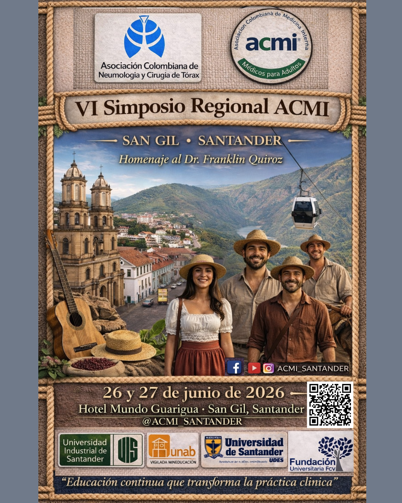
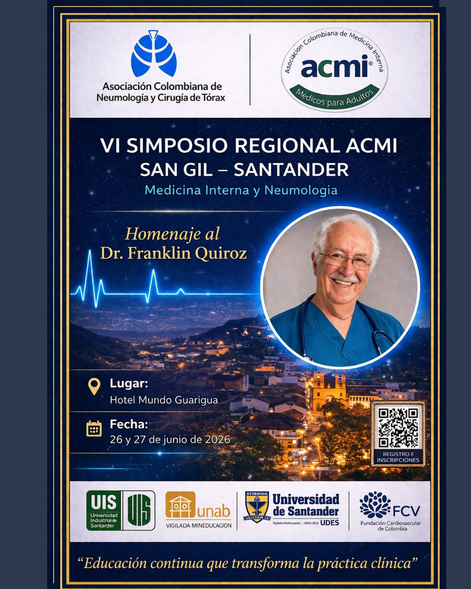

Educación médica continua, liderazgo científico y encuentro académico en el corazón de Santander.
ACMI Santander promueve la actualización científica, la integración entre especialistas y residentes, y la construcción de espacios académicos de alto nivel para fortalecer la práctica clínica en la región.
El VI Simposio Regional ACMI reunirá actividades de formación, talleres, conversatorios y espacios de discusión clínica en medicina interna y neumología.
VI Simposio Regional ACMI en San Gil.
Hotel Mundo Guarigua, Santander.
Medicina interna, neumología y actualización clínica.
Reconocimiento al Dr. Franklin Quiroz.
Estructura organizativa y académica del evento.
Aquí puedes presentar el comité organizador, presidente, junta directiva, residentes de medicina interna, universidades aliadas y patrocinadores.
Material promocional oficial del VI Simposio Regional ACMI Santander.

Versión institucional del evento con información principal de sede, fecha e inscripción.

Diseño gráfico promocional con identidad local y llamado a participación académica.

Versión visual con elementos culturales y paisajísticos representativos de Santander.

Pieza conmemorativa dedicada al Dr. Franklin Quiroz.
ACMI Santander impulsa espacios de formación médica continuada mediante simposios, talleres, conversatorios y encuentros académicos orientados al fortalecimiento del juicio clínico, la integración básica-clínica y la toma de decisiones basadas en evidencia.
Instagram: @ACMI_SANTANDER
Ubicación: Santander, Colombia
Evento: VI Simposio Regional ACMI – San Gil
Inscripciones: disponibles mediante el material promocional y el código QR de los afiches